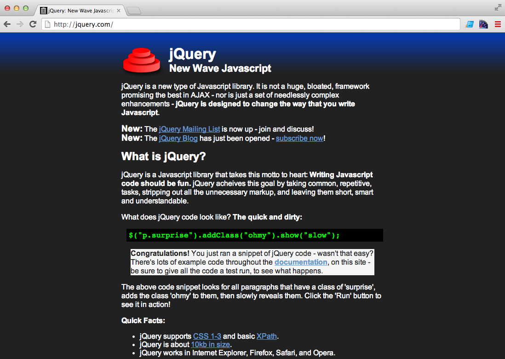
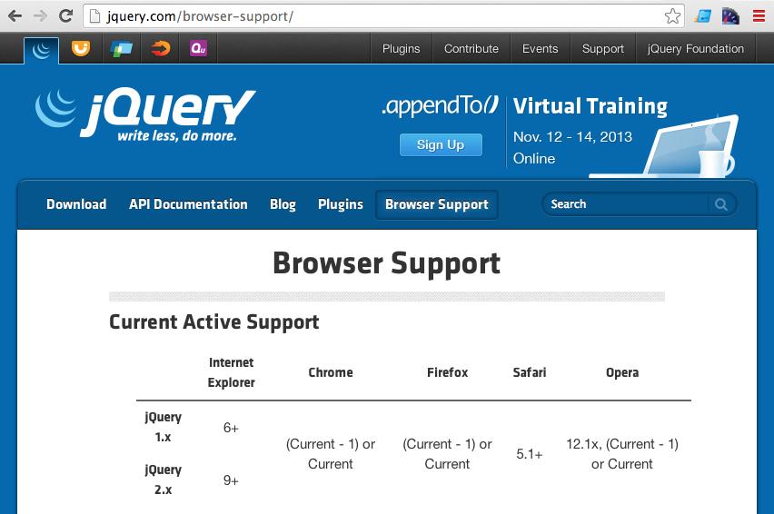
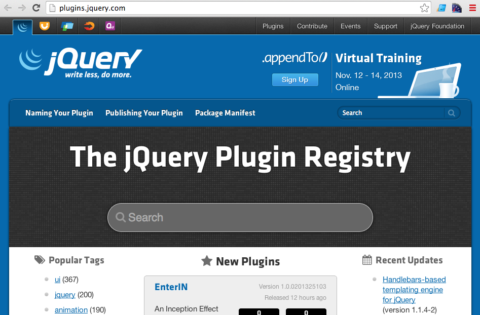

Desenvolvida por John Resig
É uma bibliotéca para manipulação do DOM
e outras tarefas de JavaScript no Browser
Lembre-se, é uma Bibliotéca, não um Framework
Garantia de JavaScript CROSS-BROWSER
Grande quantidade de Plugins
Como começar?
jQuery(document).ready(function(){
var minhasDivs = jQuery('div');
});
jQuery === $
// $(document).ready(fn) executa o código apenas quando o DOM estiver carregado
$(document).ready(function(){
var minhasDivs = $('div');
});
// $(fn) é um alias de $(document).ready(fn)
$(function(){
var minhasDivs = $('div');
});
$('seletor') Retorna um jQueryObject
e não um ElementNode ou NodeList
Comparações
var elemento1 = document.getElementById('container');
var elemento2 = $('#container');
var elemento3 = document.getElementsByClassName('box');
var elemento4 = $('.box');
var elemento5 = document.getElementsByTagName('p');
var elemento5 = $('p');
var elementos1 = document.querySelectorAll('#container p, a, .box');
var elementos2 = $('#container p, a, .box');
Eventos
// IE
document.getElementById('button').attachEvent('onclick', function(){
alert("Clicado!");
});
// padrão
document.getElementById('button').addEventListener('click', function(){
alert("Clicado!");
});
// jQuery
$('#button').on('click', function(){
alert("Clicado!");
});
Modificar CSS
// DOM
document.getElementById('button').style.color = '#ccc';
document.getElementById('button').style.backgroundColor = '#fafafa';
document.getElementById('button').style.border = '1px solid #ddd';
// jQuery
$('#button').css({
'color': '#ccc',
'backgroundColor' : '#fafafa',
border: '#ddd'
});
Adiconando Classes
// DOM
document.getElementById('button').classList.add('class1');
document.getElementById('button').classList.add('class2');
document.getElementById('button').classList.add('class3');
// jQuery
$('#button').addClass('class1 class2 class3');
Efeitos/Animações
$('selector').animate({
propriedadeCSS1: 'valor1',
propriedadeCSS2: 'valor2'
},1000, 'easeName', callback);
$('selector').fadeIn(tempo, callback);
$('selector').fadeOut(tempo, callback);
$('selector').fadeTo(tempo, opacidade, callback);
$('selector').slideDown(tempo, callback);
$('selector').slideUp(tempo, callback);
$('selector').fadeIn(tempo, callback);
$('selector').fadeOut(tempo, callback);
$('selector').fadeTo(tempo, opacidade, callback);
$('selector').slideDown(tempo, callback);
$('selector').slideUp(tempo, callback);
Ajax
$.get('/caminho-da-url/', function(data){
console.log(data);
});
$.post('/caminho-da-url/', function(data){
console.log(data);
});
$.getScript('/caminho-da-script/', function(){
console.log('script carregado');
});
$.ajax({ /* opções */ });
Criando Plugins
(function($){
$.fn.turnallred = function() {
this.css('color', 'red');
}
})(jQuery);
$('p, li, a').turnallred();
E muito mais!